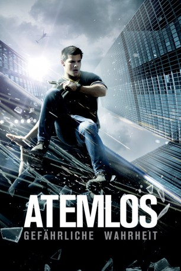

#4416 Atemlos - Gefährliche Wahrheit
Alternativ: Abduction
 
 IMDB-Wertung: 5.0 / 10
IMDB-Wertung: 5.0 / 10  Metascore: 0
Metascore: 0 
Eben noch wähnte sich Nathan Harper als stinknormaler Jugendlicher, der zur Schule geht und in einem spießigen Vorort lebt, da entdeckt er auf einer Webseite mit Fotos vermisster Kinder das Bild eines Jungen, der eine verdammt hohe Ähnlichkeit mit Nathan aufweist. Sein Zweifel an seiner vermeintlichen Herkunft erfährt überzeugend Bestätigung, als mit einem Mal ein Team hochprofessioneller Killer ihm nach dem Leben trachtet. Wer will ihn warum töten? Wer sind die Menschen, die er für seine Eltern hielt? Wo sind seine leiblichen Eltern? Wem kann Nathan noch trauen? Zunächst auf der Flucht vor Killern und Behörden nimmt Nathan schließlich gemeinsam mit seiner einzigen Vertrauten, der Nachbarstochter Karen, sein Schicksal in die Hand und spürt seiner mysteriösen Vergangenheit nach.
Jahr: 2011
Dauer: 106 Minuten
FSK: 12
Land: Studio: LionsgateTonspuren: DTS - ,
Untertitel: Deutsch,
Auflösung: 1080p (1920x800) Größe: 7055 MB
Genre: Action, Mystery, Thriller
Regisseur:  John Singleton
John Singleton
Drehbuch: Vicente Coello
Soundtrack:
Darsteller:
 Ken Arnold als Thermal
Ken Arnold als Thermal Maria Bello als Mara
Maria Bello als Mara- Benjamin J. Cain Jr. als Driver
- Radick Cembrzynski als Kozlow's Tech
 Richard Cetrone als Gregory
Richard Cetrone als Gregory Lily Collins als Karen
Lily Collins als Karen Jack Erdie als Short Sleeves
Jack Erdie als Short Sleeves- Rita Gregory als Nurse
 Tim Griffin als Red Flannel
Tim Griffin als Red Flannel Nathan Hollabaugh als Cop
Nathan Hollabaugh als Cop Jason Isaacs als Kevin
Jason Isaacs als Kevin Taylor Lautner als Nathan
Taylor Lautner als Nathan Alfred Molina als Burton
Alfred Molina als Burton Michael Nyqvist als Kozlow
Michael Nyqvist als Kozlow Emily Peachey als Girl
Emily Peachey als Girl Will Peltz als Jake
Will Peltz als Jake Elisabeth Röhm als Woman / Lorna
Elisabeth Röhm als Woman / Lorna- Nickola Shreli als Alek
 Victor Slezak als Tom Shealy
Victor Slezak als Tom Shealy- Antonique Smith als Burns
 Roger Guenveur Smith als Mr. Miles
Roger Guenveur Smith als Mr. Miles Ilia Volok als Sweater
Ilia Volok als Sweater- Cherokee Walker als Helicopter Pilot
 Sigourney Weaver als Dr. Bennett
Sigourney Weaver als Dr. Bennett Denzel Whitaker als Gilly
Denzel Whitaker als Gilly- Allen Williamson als Billy
- Bernie DeCosmo als Doctor , uncredited
 Joe Fishel als Pirates Fan , uncredited
Joe Fishel als Pirates Fan , uncredited- Bryan Friday als Brighton Beach , uncredited
 William Kania als CIA Tactical , uncredited
William Kania als CIA Tactical , uncredited Laurie Mann als Pirate Fan , uncredited
Laurie Mann als Pirate Fan , uncredited Tiffany Sander McKenzie als Woman in ER Waiting Room , uncredited
Tiffany Sander McKenzie als Woman in ER Waiting Room , uncredited- Terri Middleton als Doctor / Baseball Fan , uncredited
 Dermot Mulroney als Martin Price , uncredited
Dermot Mulroney als Martin Price , uncredited Phil Nardozzi als Train Passenger , uncredited
Phil Nardozzi als Train Passenger , uncredited Joanna Theobalds als Teacher , uncredited
Joanna Theobalds als Teacher , uncredited- Jake Andolina als CIA Man
- Oriah Acima Andrews als Riah
- Steve Blass als Game Announcer
- Derek Burnell als Hot Dog Vendor
- Holly Scott Cavanaugh als Mrs. Murphy
- Mike Clark als News Reporter
- Mike Lee als Tech
- James Liebro als Stadium Usher
- Frank Lloyd als Brighton Beach #2
- Christopher Mahoney als Caretaker
- Adam Stanley als CIA SWAT Leader
- Art Terry als Amtrak Security Guard
- Tony Amen als Airport Passenger , uncredited
- Diedra Arthur-O'Ree als Pedestrian , uncredited
Datei: X:\2011(A-F)\Atemlos - Gefährliche Wahrheit (2011, FSK12, 1920x800).mkv seit 15.09.2016
Festplatte: HD 2010(G-Z)-2011(A-F)
 Es gibt insgesamt 86 Filme in der Gruppe '2011(A-F)'
Es gibt insgesamt 86 Filme in der Gruppe '2011(A-F)'